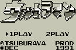
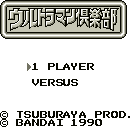
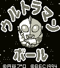
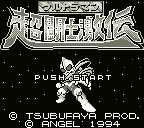

Ultraman - Gameboy Games

- Company: Bec
- Date Released: 1991
- Genre: Fighting game
Controls
- A button: Kick
- B button: Punch
- Start: Jump
- Select: Pause
You control Ultraman as he battles various monsters.

- Company: Bandai
- Date Released: 1990
- Genre: War strategy game
The attacks and defense of the characters are based on some sort of card system. Whoever has
the better cards will win the battle.

- Company: Bec
- Date Released: 1994
- Genre: Platform game
Controls
- A button: Jump
- B button: Change into a Ball/Change Back to Ultraman
- Start: Pause
- Select: [not used]
Ultraman has the ability to turn himself into a ball (hence the title). In this form, he can bounce to
high platforms and break bricks.

- Company: Angel
- Date Released: 1994
- Genre: Platform game
Controls
- A button: Jump
- B button: Punch
- Start: Pause
- Select: [not used]
Ultraman attacks with a standard punch, but he can also power-up and release a weapon by holding
down the punch button. You get a different weapon depending on how long you
hold down the punch button.
Anime Video Game Resource Center © 1998 by Luis A. Cruz